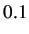

Next: Conducting Ramp Test on Up: sbhs-new-manual Previous: Discussion
We have used Scilab and Xcos as an interface for sending and receiving data. Xcos diagram is shown in figure 3.1. Heater current and fan speed are the two inputs for this system. They are given in percentage of maximum. These inputs can be varied by setting the properties of the input block's properties in Xcos. The plots of their amplitude versus number of collected samples are also available on the scope windows. The output temperature profile, as read by the sensor, is also plotted. The data acquired in the process is stored on the local drive and is available to the user for further calculations.
In the ramp_test.xcos file, open the heater block's parameters to give a ramp input to the system with some value for slope. For this experiment, we have chosen slope = . Double click on the ramp input block labled as Heater input. Change the following values in the respective fields: slope = 0.1, start time = 200, initial output = 20. Keep the fan constant at 100.
The ramp test data file will be saved in Ramp_Test folder. The name of the file will be the date and time at which the experiment was conducted. A sample data file is provided in the same folder. The sample data file is named as ramp-data-local.txt and ramp-data-virtual.txt. Refer to the one depending on wheather you are performing a local or a virtual experiment. Referring to the data file thus obtained as shown in table 4.2, the first column in this table denotes samples. The second column in this table denotes heater in percentage. It starts at 30 and increases with a step size of 10 units. The third column denotes the fan in percentage. It has been held constant at 50 percent. The fourth column refers to the value of temperature. The fifth column denotes time stamp. The virtual data file will have four time stamp columns apart from first 3 columns. These four time stamp columns are client departure, server arrival, server departure and client arrival. These can be used for advanced control algorithms. These additional time stamps exist in virtual mode because of the presense of network delay.